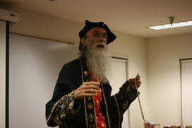
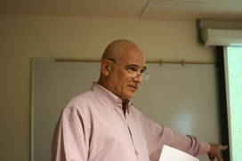
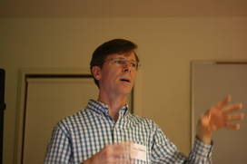
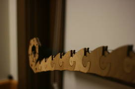
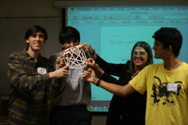
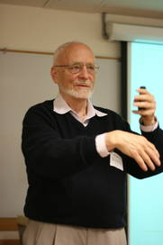
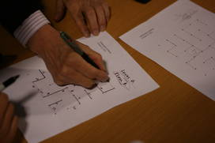
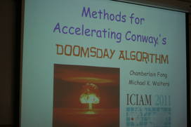
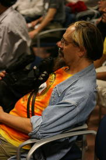

Stan Isaacs was our gracious host who got the evening underway by introducing Hugh Macdonald, who, as Hughdini and in full wizard regalia, presented a fun and entertaining magic show, starting with deft sleight of hand and finishing with an illusion that can only be called the last straw.

Mark Burstein then gave a talk titled
"Martin and Lewis: Mr. Gardner and Mr. Carroll".
He told us about the Lewis Carroll Society of North
America and the book he recently edited called
"A Bouquet for the Gardner: Martin Gardner Remembered."
I particularly liked the three
books he mentioned as his "desert island books"---Joyce's Finnegans
Wake, Nabokov's Ada, and Gardner's Annotated Alice, all of which have
connections to Carroll and Gardner.

John Edmark presented some novel and amazing kinetic mobile structures
based on spirals and the golden ratio. Best of all, he had the actual
physical sculptures with him, which led to much fun by many people.
These must be seen to be believed.


Next we got on our feet and cooperatively built
polyhedra
out of
string
(and
other things), following instructions from Karl Schaffer, founding
member of the "Dr. Schaffer and Mr. Stem Dance Ensemble."
Inspired,
the audience created other structures, such as this complete graph on
seven vertices, requiring four people.

Elwyn Berlekamp then showed us a little bit about
dots and boxes,
a game I played as a child but apparently did not even learn the most
fundamental strategies. He showed a few tricks that I believe most of
the audience had never seen before, and then drew the majority of the
crowd out to the patio to play nine simultaneous games, winning
them all handily. This was on just a 6x6 board! I mean, how
complicated could it be? Joe Kisenwether challeneged Elwyn to a
final game and gave him the greatest challenge of the evening
but still lost 12-13.


The final presentation of the evening was by Chamberlain Fong on an
improved method for calculating the day of the week---unfortunately I
rudely missed most of this being drawn away to see how the games
were going.

Thanks to Stan Isaacs for organizing this. A great time was had by
all, including young Fagan here, enjoying a front row seat with
Barry Hayes.
